climbing festival
Two days at the climbing festival in Valle dell'Orco. We'll be climbing together, meeting the wider climbing community, and making sure women new to the rock have people to go with and someone to ask.
Climbing
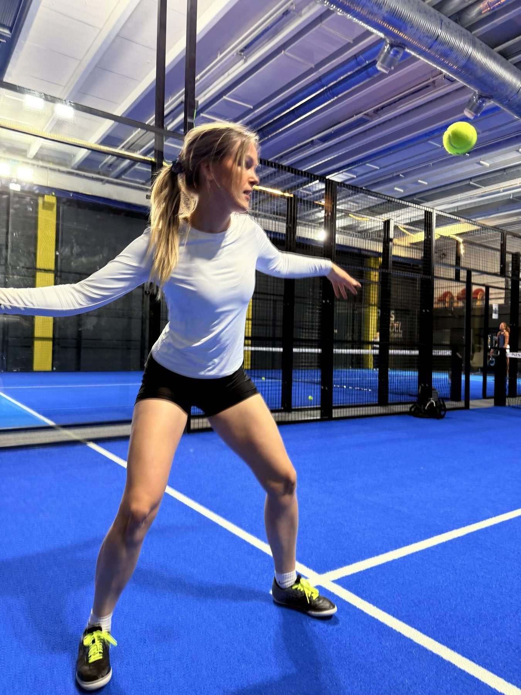
Events
Climbing, cycling, running, padel and whatever comes next. Non-competitive, beginner-first, and always with a conversation attached.
Upcoming
Some dates are still being confirmed with our local partners. Follow us on Instagram for the moment each one opens for sign-ups.
Two days at the climbing festival in Valle dell'Orco. We'll be climbing together, meeting the wider climbing community, and making sure women new to the rock have people to go with and someone to ask.
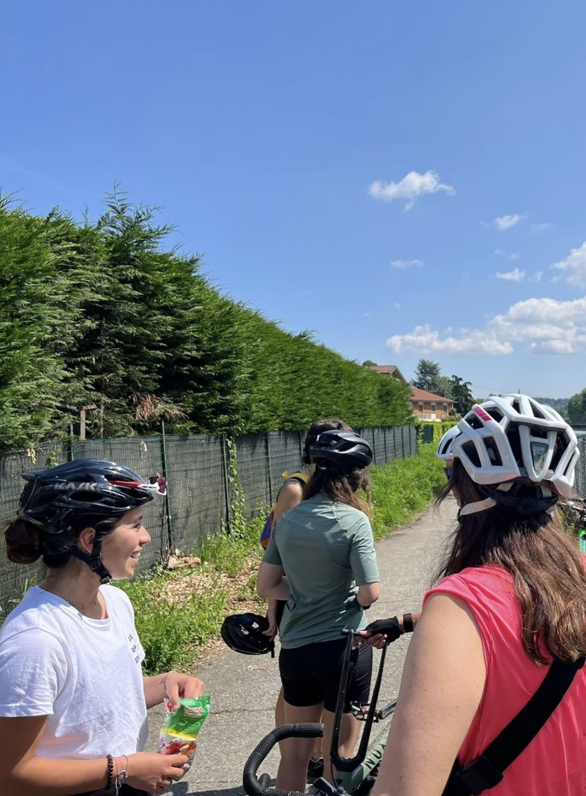
A series of rides growing directly out of our bike repair workshop. The point isn't the distance — it's that riding out, alone or together, stops feeling like something other people do.
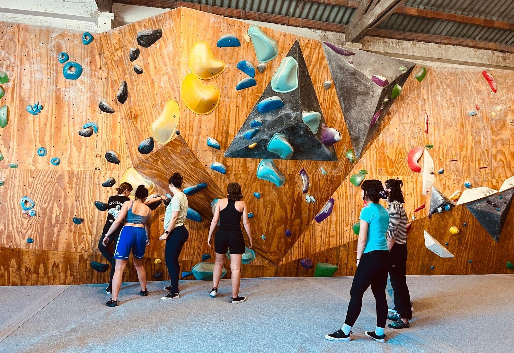
Back to the wall where it all started, for another first-timers' session. Never climbed before, don't own shoes, don't know the words for any of it? That's exactly who this is for.
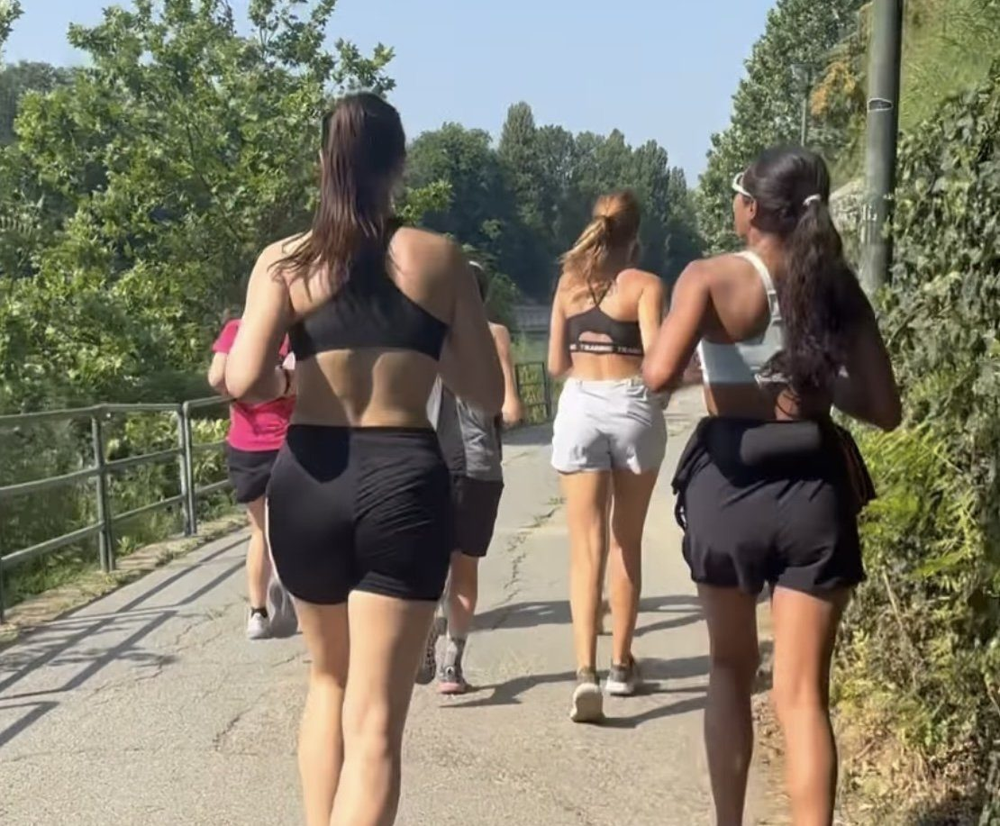
A social run followed by an open conversation about money — savings, index funds, and the financial independence that rarely gets discussed among women. Movement first, then the talk that matters.
What's already happened
Each one was built around a woman in the community who already knew something and was willing to share it.
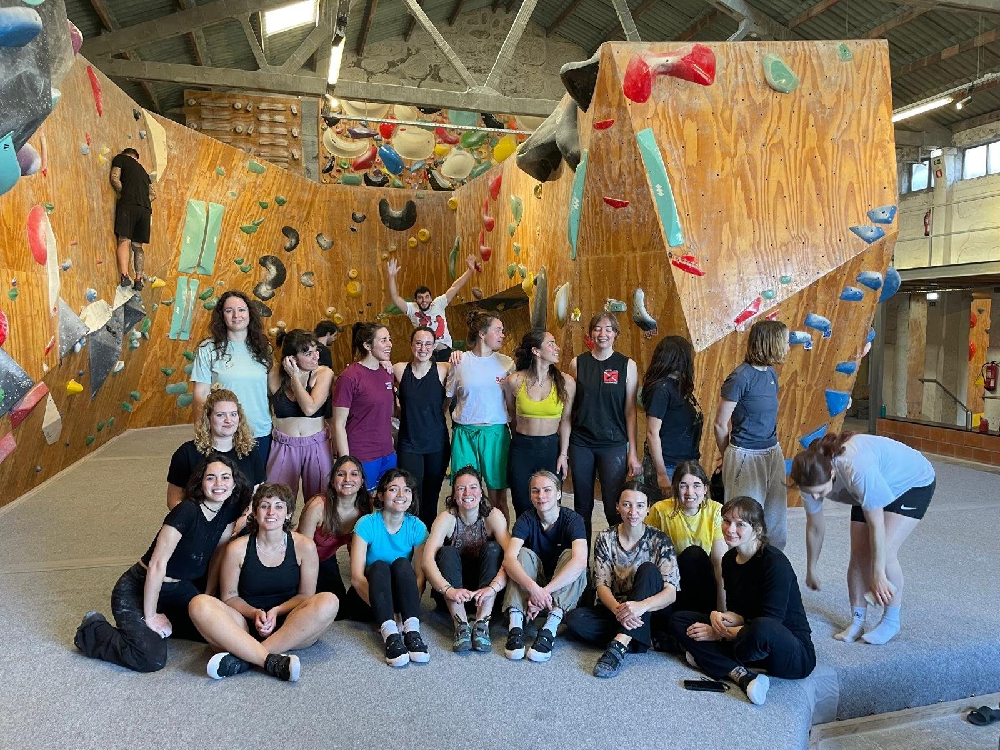
A first bouldering session that removed the barrier of “needing someone to explain how it's done.” Over 20 women tried the sport for the first time in a single afternoon.
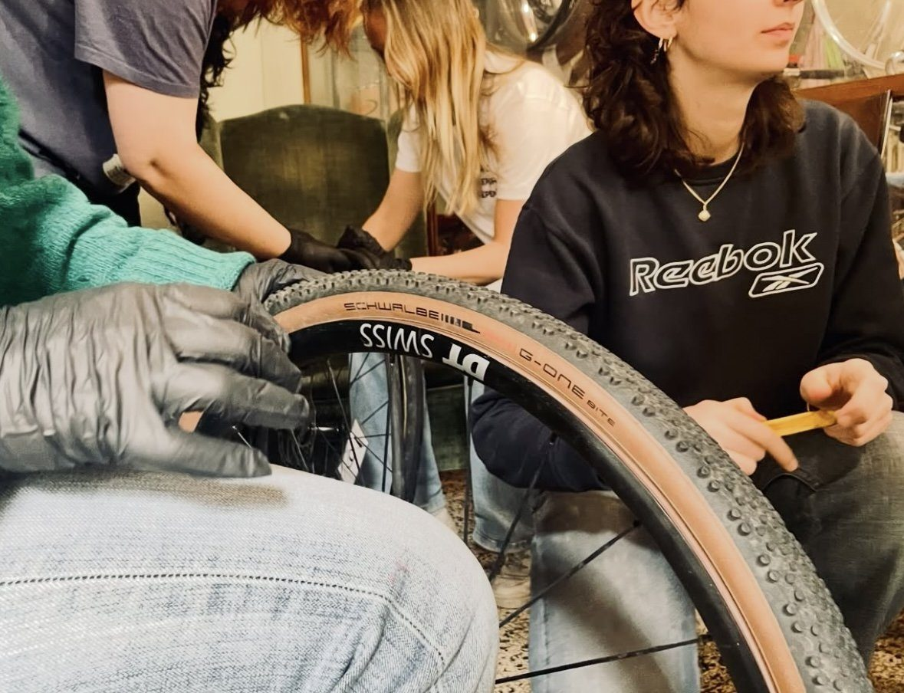
A woman with bike-repair expertise ran a workshop so participants would feel confident enough to go on long rides — even alone. It grew into an ongoing series of group rides.
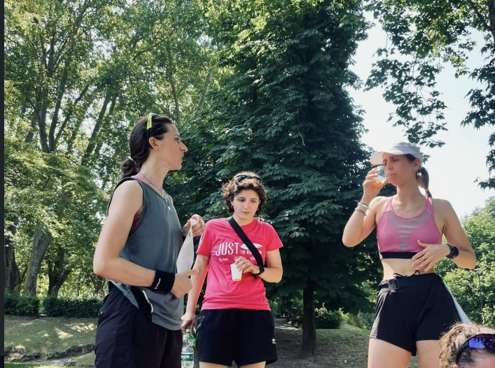
A nutrition expert led a social run and picnic built around a debate on women and food — challenging the historical focus on calorie restriction and weight loss, and reframing it around nurturing the movement.
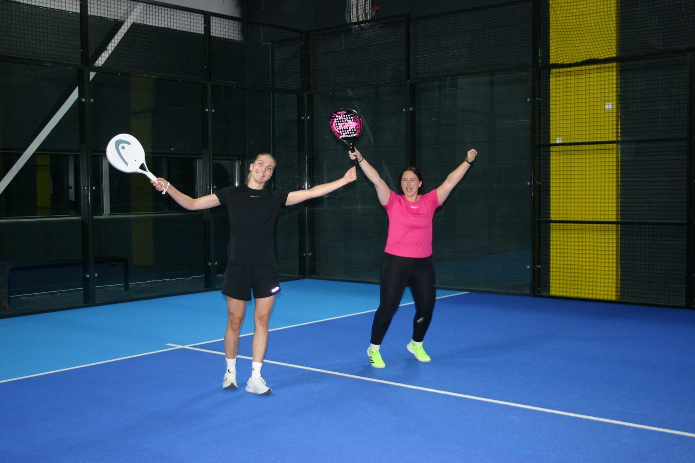
Our first padel event, run in partnership with a local club, gave 11 women their first experience of the sport across a single weekend.
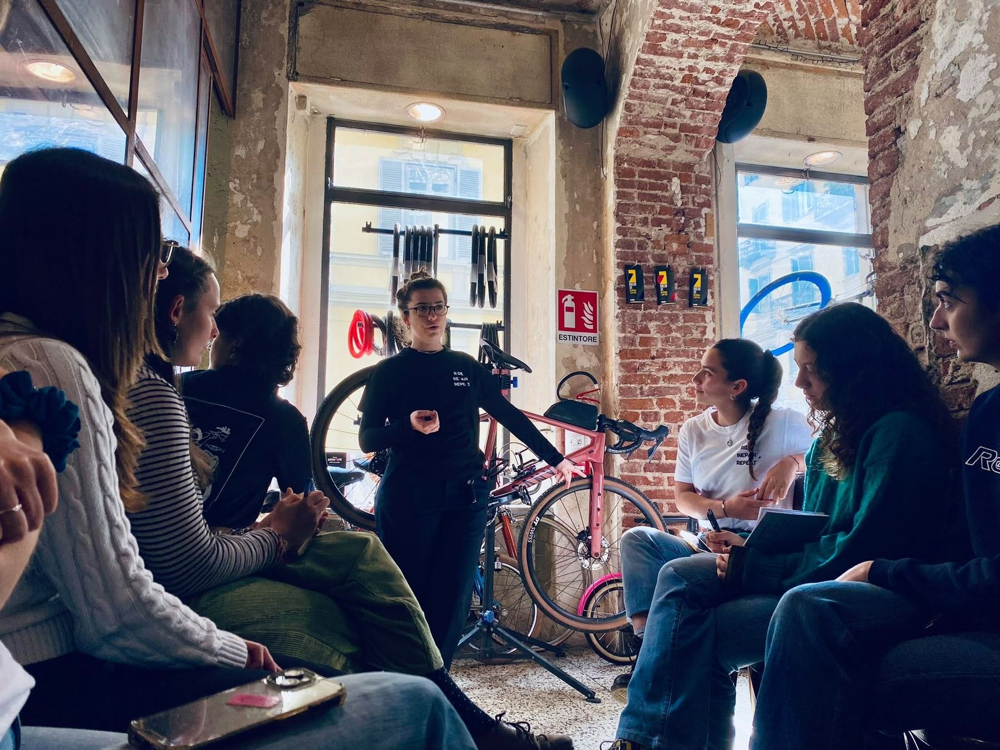
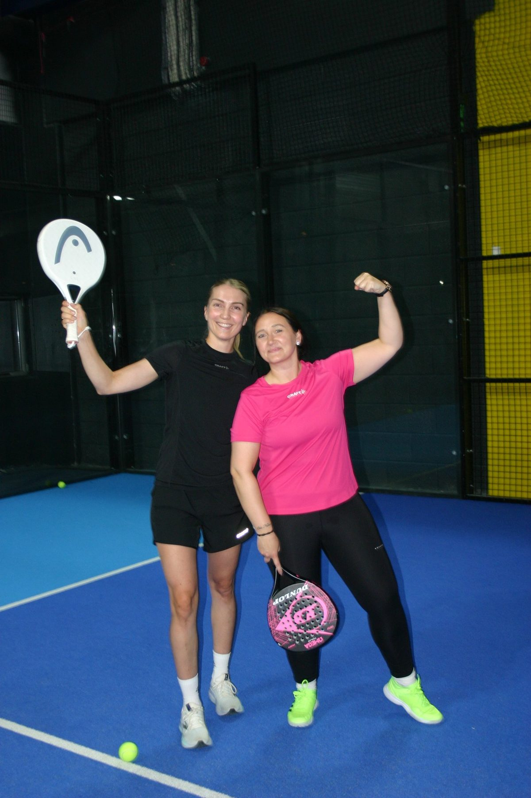
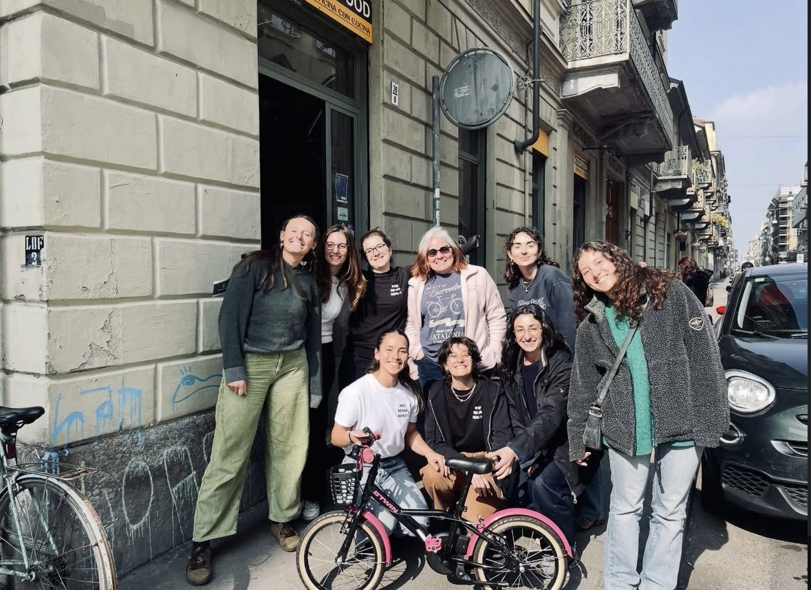
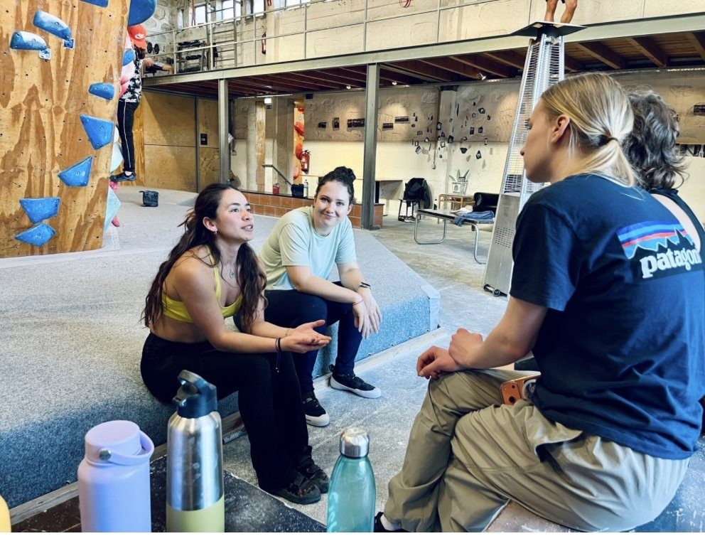
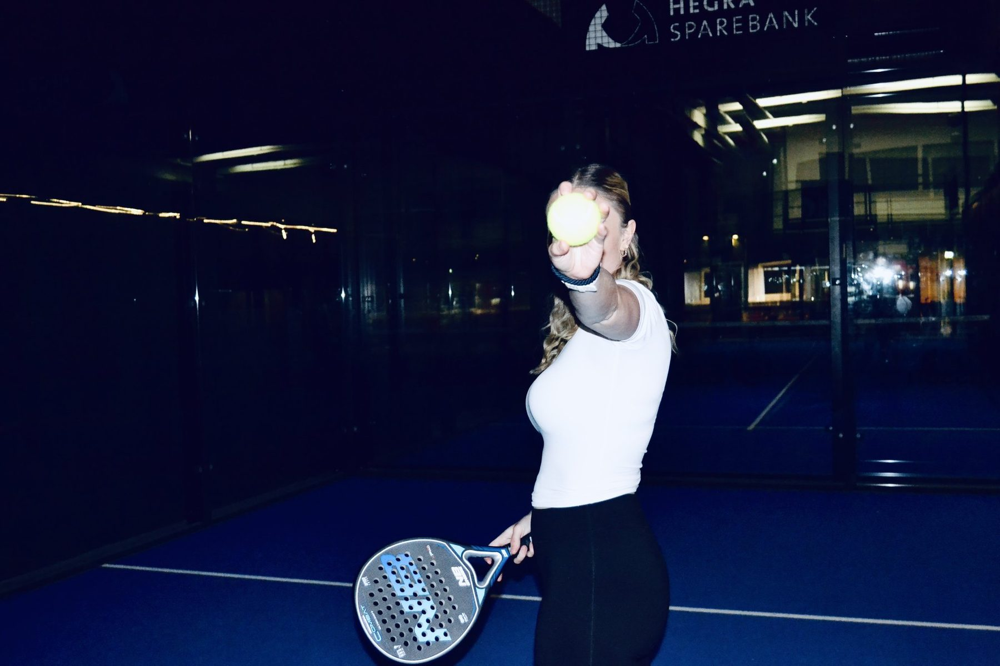
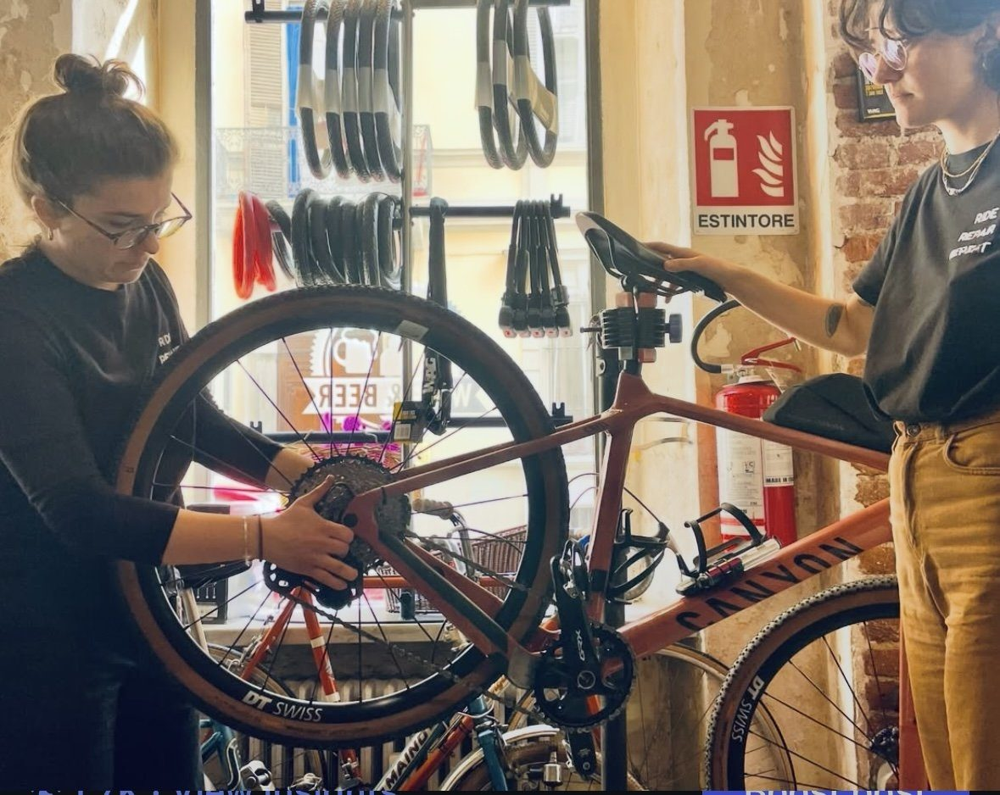
In their own words
These three cards are here so the layout is ready. Swap the text and names below for real quotes from women who came to an event — that is all that needs changing.
[ Replace with a quote from a woman who tried a sport for the first time — what she was worried about before she came, and what it was actually like. ]
[ Replace with a quote about the people rather than the sport — meeting others, arriving alone, or a friendship that started at an event. ]
[ Replace with a quote from someone who was new to the city, or who had not felt welcome in sport before — the barrier the event removed. ]
Came to one of our events? Tell us how it went — we would like to put your words here.
Your turn
Every event on this page started with one woman who had an idea and said it out loud. If you have one, we'll help you make it real.